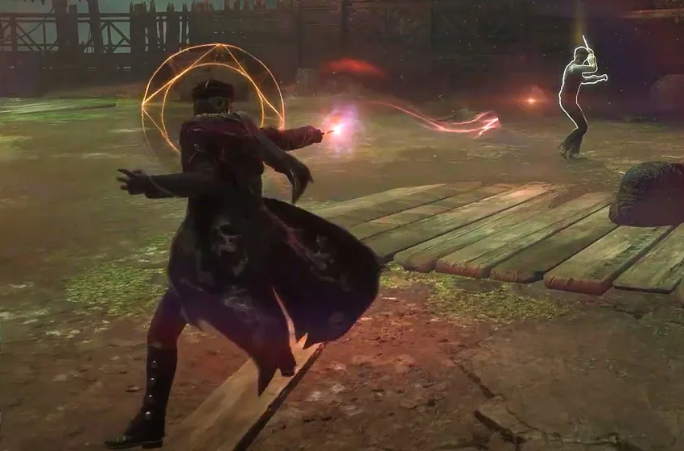
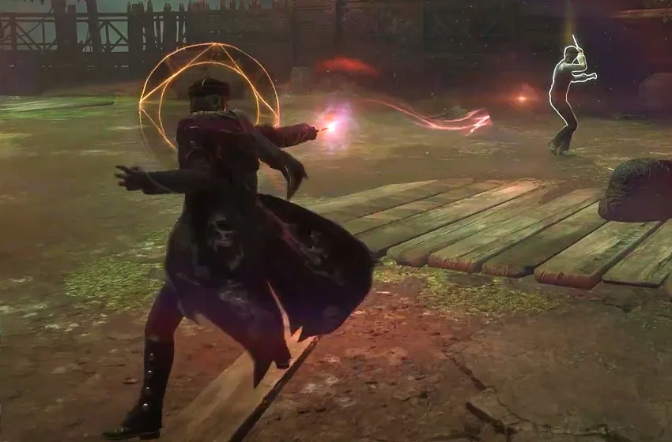

Hogwarts Legacy
Setup Size = 89.53 GB
Platforms: PlayStation 4, Windows, and Xbox
About This Game
Hogwarts Legacy free download is an action-role playing video game The game is set in the 1800s, long before the events of the Harry Potter series, allowing players to explore the wizarding world in a new and exciting way. The game begins with players creating their own character, a student at Hogwarts School of Witchcraft and Wizardry. Players can customize their character’s appearance, gender, and magical abilities. Once the character is created, players are free to explore Hogwarts and the surrounding areas, completing quests, making choices, and building relationships with other characters. One of the most exciting features of Hogwarts Legacy is the open-world exploration. The game allows players to freely explore Hogwarts and the surrounding areas, including the Forbidden Forest and Hogsmeade village. The environments are highly detailed, with hidden secrets, puzzles, and challenges to discover. As players explore, they will encounter creatures and characters from the Harry Potter universe, some of which may be friendly, while others may be hostile. Combat is an important aspect of Hogwarts Legacy, and players will use a combination of magic and physical combat to defeat enemies. The game features a wide variety of spells and magical abilities, each with their own strengths and weaknesses. Players will need to learn how to use their spells effectively, as well as master physical combat techniques like dodging, blocking, and counter-attacking. As players progress through the game, they will unlock new spells and abilities, allowing them to become more powerful.
Screenshots
 

System Requirements
- OS: 64-bit Windows 10
- Processor: Intel Core i5-6600 (3.3Ghz) or AMD Ryzen 5 1400 (3.2Ghz)
- Memory: 16GB RAM
- Graphics: NVIDIA GeForce GTX 960 4GB or AMD Radeon RX 470 4GB
- Graphics card (NVIDIA): NVIDIA GeForce® GTX 1060 3GB
- DirectX: 12 Compatible video card or equivalent
- Storage: 90 GB available space